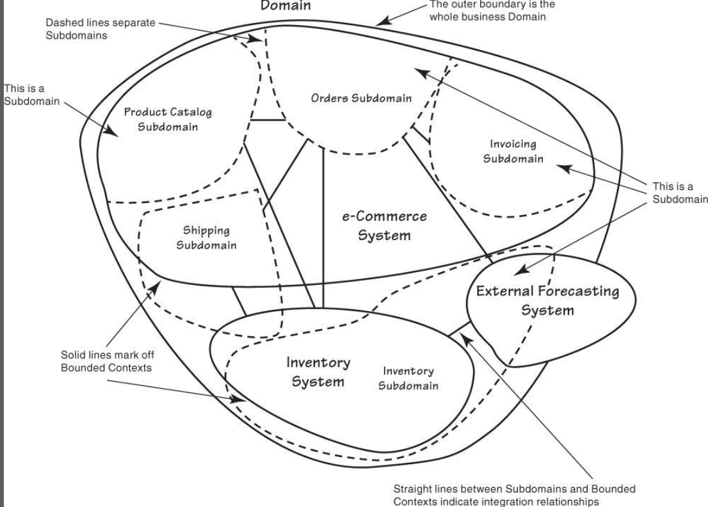
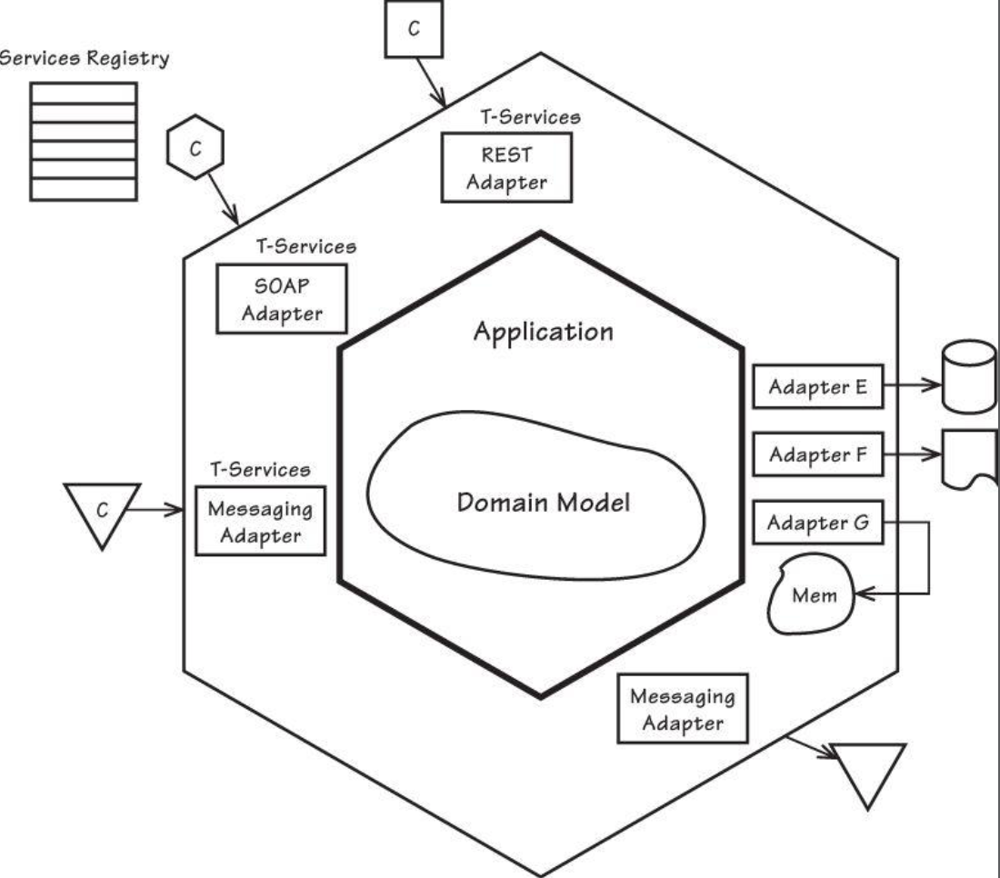
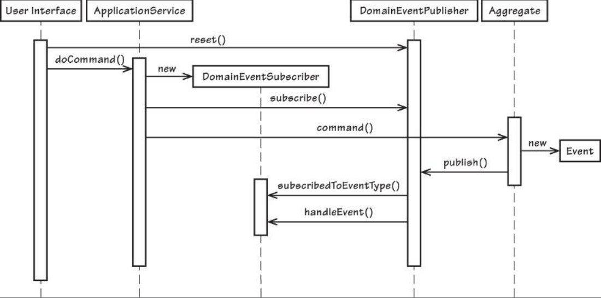
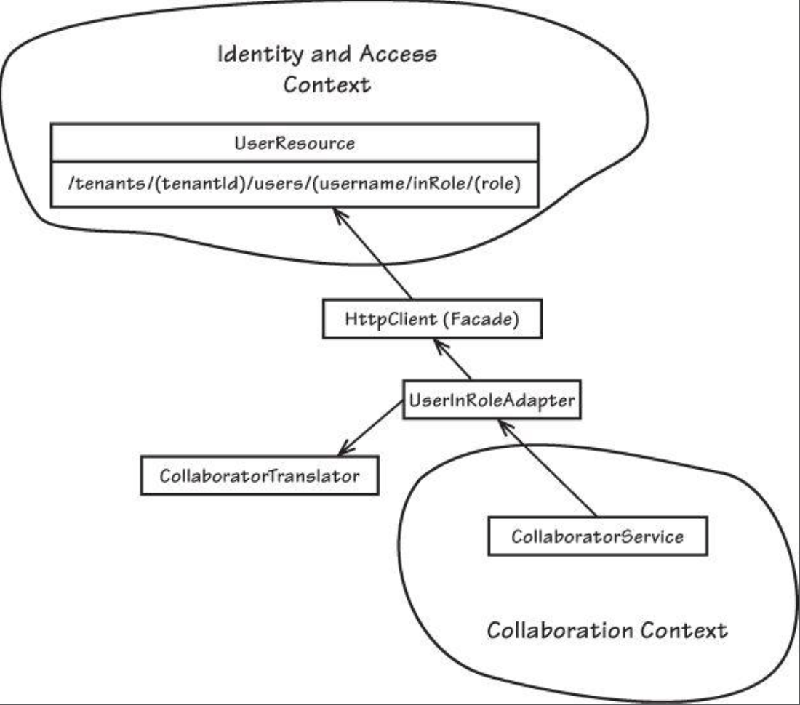

领域驱动设计（一）
一个古老的逻辑设计想象，继承了OOP, 对解决商业逻辑，实现商业应用，有一些帮助。 作为一名手艺人，总有一些激情想做出一些还行的产品，总有一些理想经过不断的尝试产出一些不错的物件。此设计思想便是让手艺人学会一些应该有的思考，谋定而后动。
why领域
首先领域可以理解为一个课题，就好像数学课。有课代表，老师，简称砖家。 然而手艺人确并不懂数学。但是手艺人却要通过砖家的描述发明解决数学问题的工具，比如，测量仪。如何优雅的设计出测量仪的各个零件，外观长什么样子，测量范围是多少，精确度多少。如果换成做软件，这就是领域驱动设计探讨的问题。并且很多设计思想可以从现实中学到，映射。
how优雅
看看一个实际的DIY木板床的例子：
- 组件 床头 床尾 支架板 床板 -> 汇总 -> 材料切割清单
- 木料选择 -> 材质优劣，用量，预算
- 标记组件，打孔位置 -> 汇总 -> 组装图
- 辅助工具选择，辅助材料 钉子 等-> 汇总 -> 辅助工具材料清单
逻辑上来说解决这些问题，我才有信心去diy一个简单的最基本的床。
那么设计一个最基本的文件系统是如何呢？
- 组件， 文件底层存储读写，文件操作管理，界面，用户群组权限管理 -> 逻辑分类边界
- 组装图 -> 数据库，前后端，中间件 -> 架构设计，边界交互
- 材料 -> 运行环境，语言，操作系统 -> 花费，经济成本，知识曲线。
- 工具类 -> ci，repo，monitor，test -> 辅助开发，质量控制
可是diy出来发现很多问题，没用水平仪 床板有高度差。踩上去吱呀作响，木料一块一块并不100%吻合，切割的时候设计太死板，没有预留一点拼接出错的空间。
因为有些地方用的是无螺纹钉，取出只能破坏木料，要拆床搬家怎么办呢？床底下有大量的空间想改装加个抽屉，发现预留的位置太小了。甚至因为diy没有按照标准尺寸打造，没有合适大小的被子。虽然可以睡了，但是后续问题惨不忍睹，只能自己睡，不好拿出手在朋友面前炫耀一番。
软件系统依然如此。前人踩过的坑，总结下来一些方面，设计的时候就好像是一个模版，一份清单，大致对照，总能避免很多大方向的问题。配以一些小技巧，小套路，就算能做出一个不错的自己睡着舒服的床。并且有点期待去试试做个更好的。
-
语言
现在团队一般是怎么样的呢？特别是国际化以后。
多开发 -> 少 ba <- 多领域专家
显而易见时间精力的瓶颈在中间。为什么呢，因为手艺人不懂数学，只好带个翻译。那要去掉中间环节怎么办呢？ 这里就需要一门显示的语言（ubiquitous language）作为桥梁去融合两边的交流。有什么呢？ 依据描述，划出边界条件里的名词动作。并用这些划定好的物品为支点进行沟通。就好像一段小对话：
航空专家：设计一个系统跟踪，导航飞机的航线图，有出发点，降落点，飞行路线。
搬砖家： 好吧，这么说至少需要三样东西， 出发，降落，飞行路线。所以是 出发点->路线->降落点。那飞行高度呢？飞行路线怎么定义呢？
航空专家：飞机的飞行航行时高度都是固定的，飞行路线是很多小段的路线切割而成，每次飞机飞行一段距离就要确定是否偏离，就好像是checkpoint。使得飞机经过checkpoint得到最好的导航/信号/安全方面问题。
搬砖家：哦，明白了，所以出发点和降落点只是特殊类型的checkpoint。飞行路线由一组checkpoint组成。飞行高度在航行的边界下是constant。 -
领域，子领域，边界
领域只在边界里才有明确的含义。就好像在航行的边界条件下飞行高度才有意义。 领域里可以拆成多子领域。看一张电子商务系统的图：
 -
架构
分层结构。ui层 | application层 | domain领域层 | 基础设施层
ui层： 用户请求，界面展示。注意它不包含任何商业逻辑。这一层可能会有一些数据校验，但不属于领域。ui层是application层的直接使用者。
application层： 但是它是domain领域层的直接使用者&&协调者，他也没有任何商业逻辑。application层里面存在application service。他的工作可能会有一些安全控制，数据校验，或者事件发动，邮件发送。并且会很大一部分职责是组装数据给ui层。application层是非常轻便的一层，如果你的application层很复杂，需要注意是否你的商业逻辑泄漏到了这一层。
domain层：边界内的全部商业逻辑。domain service很大一部分职责是处理实现商业逻辑，并且发出命令通知下游使用正确对策处理。
基础设施层： 如ui层的组件封装， 系统核心core组件封装。基础框架。 -
六边形
从界面展示到数据库存储，整个数据是流经我们的系统的。界面展示可能多变，可以多端，数据库可能会迁移存储，或者多数据中心，sql/no-sql多类型存储。我们的系统在中间是必经之路。
六边形就是service-oriented architect更好的说明与升级。

但是面对外部交流复杂度越来越高，如果单一处理，势必会埋下性能隐患。 为了解决这个问题就有了cqrs 读写分离&& eventual consistency最终一致性&&事件驱动event driven architect孕育而生。
-
entity & value object & 聚合
领域概念都可以是一个entity，这里并不是在说orm。 entity是一个有独立id的事物。这里也不是数据库表的一个对应，其实大多数数据库表都是应该都一个aggregate聚合物。 比如钱，在钱包的边界里，用户都有自己的钱包，钱包有自己的独立id，但是用户不关心追踪钱包里钞票的id是多少，只要钞票的面值，数量是一样的。换句话说，钞票是无id属性的，100块就是100块，哪一张100不重要。 immutable。每次我用到他的时候我不可能把100块撕成两半。如果我要用50，我只能是新建两张50块的钞票。摧毁100快的钞票。内部属性不能修改。他是value equality或者structure equality。entity是identity equality。 这里钞票就是一个value object。在使用的时候：favor value object to entity。 为什么？ 因为entity的生命周期长，任何改动都有历史可循。而value object无生命周期，要么新建要么摧毁。 -
领域服务
责任分离。商业逻辑包裹。
1 | boolean authentic = false; |
有什么问题呢以上代码？tenant是一个子用户类型。而用户竟然要自己去authenticate。很明显这个责任应该在类似authentication service当中例如：
1 | user-descriptor=DomainRegistry |
-
领域事件
任何领域的改变，逻辑都可以变成了显示的。可以有playback history如果把事件存储，可以加listeners as your bussiness expand，领域里上游逻辑和下游逻辑松耦合。
经常和领域专家交流会听到如此的词：当什么发生的时候，这个也要做，那个可以不做。。这就是很好的领域事件触发点。看个publish/subscribe的简单交互图
 -
工厂 & repository
别忘了用工厂生成非persistent对象，用repo生成storage backup对象。别离了Spring活不了了。 -
设计模式。
设计模式三大类，是creation还是structure还是behavior。 -
交界集成
rpc/rest/message 分布式系统的交互。正如六边形一样，如何做好责任分离，多client兼容。

未完待续。。。